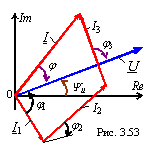

Для наглядного представления соотношений между электрическими величинами и для проверки результатов расчёта строят векторную диаграмму токов и напряжения цепи. Построим качественно векторную диаграмму для схемы рис. 2.52.
Построение начнём с вектора напряжения U, общего для всех параллельно соединённых ветвей. Проведём его с начала координат под углом Yu к оси Re (рис. 2.53). Далее, под углом φ1 = arctg(XL1 /R1) к вектору U строим вектор тока I1, с его конца под углом φ2= -arctg(XC1 /R2) к вектору U вычерчиваем вектор тока I2, а с конца последнего под углом φ3 = -90° к вектору U - вектор тока I3. Соеднив начало вектора тока I1 с концом вектора тока I3, получим вектор общего тока I на входе цепи. Отметим угол φ между векторами входного напряжения U и тока I, направленный от вектора тока I к вектору напряжения U.
|